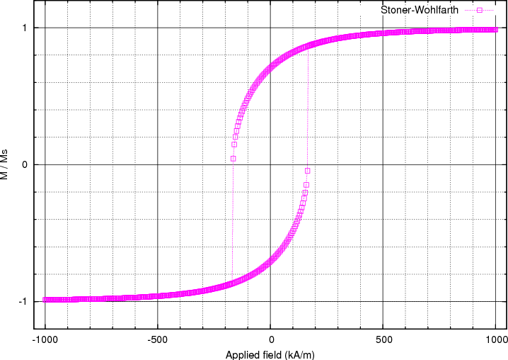
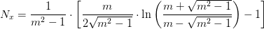

This example is very similar to Example: Simple hysteresis loop but computes the hysteresis loop of a smaller ellipsoidal magnetic object. This allows to compare the results with the analytical solution given by the Stoner-Wohlfarth model. We use an ellipsoid whose x,y,z semi-axes have lengths 9 nm, 3 nm and 3 nm, respectively. (The mesh is contained in ellipsoid.nmesh.h5 and produced with Netgen from ellipsoid.geo):
To compute the hysteresis loop for the ellipsoid, we use the script ellipsoid.py:
import nmag
from nmag import SI, at
#create simulation object
sim = nmag.Simulation()
# define magnetic material
Py = nmag.MagMaterial(name=”Py”,
Ms=SI(1e6,”A/m”),
exchange_coupling=SI(13.0e-12, “J/m”))
# load mesh: the mesh dimensions are scaled by 0.5 nm
sim.load_mesh(“ellipsoid.nmesh.h5”,
[(“ellipsoid”, Py)],
unit_length=SI(1e-9,”m”))
# set initial magnetisation
sim.set_m([1.,1.,0.])
Hs = nmag.vector_set(direction=[1.,1.,0.],
norm_list=[1.0, 0.995, [], -1.0,
-0.995, -0.990, [], 1.0],
units=1e6*SI(‘A/m’))
# loop over the applied fields Hs
sim.hysteresis(Hs, save=[(‘averages’, at(‘convergence’))])
We apply external magnetic fields in [110] direction (i.e. 45 degrees between the x and the y-axis) to this system, with strengths in the range of 1000 kA/m down to -1000 kA/m in steps of 5 kA/m.
The save parameter is used to tell the hysteresis command what data to save, and how often. Here, we are only interested in saving the spatially averaged magnetisation values for every stage (i.e. meta-stable equilibrium before the applied field is changed).
To extract the data needed for plotting the hysteresis loop we proceed as explained in the previous example Example: Simple hysteresis loop. We use the ncol command and extract the data into a text file named plot.dat:
$ ncol ellipsoid H_ext_0 H_ext_1 H_ext_2 m_Py_0 m_Py_1 m_Py_2 > plot.dat
We then use Gnuplot to plot the loop:
$ gnuplot make_plot.gnu
The gnuplot script make_plot.gnu is:
set term postscript eps enhanced color
set out 'hysteresis.eps'
set xlabel 'Applied field (kA/m)'
set ylabel 'M / Ms'
versor_x = 1/sqrt(2)
versor_y = 1/sqrt(2)
versor_z = 0.0
scalar_prod(x1,x2,x3) = x1*versor_x + x2*versor_y + x3*versor_z
set mxtics 5 # minor tics and grid
set ytics 1
set mytics 5
set grid xtics ytics mxtics mytics lt -1 lw 0.5, lt 0
plot [-1050:1050] [-1.2:1.2] \
'plot.dat' u (scalar_prod($1,$2,$3)/1000):(scalar_prod($4,$5,$6)) t 'Stoner-Wohlfarth' w lp 4
Note that within the gnuplot file, we project the magnetisation data in the [1,1,0] direction because the applied field was acting in this direction. We obtain this hysteresis loop:
The coercive field, which is located somewhere between 165 and 170 kA/m, can now be compared with the analytically known result for this particular system. To compute it, we need the demagnetizing factors Nx, Ny, Nz of the particle along the main axes. Since we deal with a prolate ellipsoid where two of the axes have the same dimension (y and z in this case), it is sufficient to compute the factor along the longest axis (x axis). The other two are easily derived from the relation Nx + Ny + Nz = 1. The expression to compute Nx is

where we call the length of the x semi-axis a, the length of the y (or z) semi-axis c, and take m to be the ratio m = a/c. Here, the value of Nx is therefore 0.1087, so we have Ny = Nz = 0.4456. With these values the shape anisotropy is easily computed according to the expression:
This gives Ha = 337 kA/m in the case of Ms = 1000 kA/m. The final step is to compute the coercive field hc using this analytical (Stoner-Wohlfarth) result:
Here, theta_0 is the angle between the easy-axis of the particle (x-axis in our case) and the direction of the applied field. Substituting theta_0 = 45 (degrees) in the formula, we obtain hc = 0.5, that is Hc = 0.5 * Ha = 168 kA/m. As we have seen before, the simulated hysteresis loop gives a value between 165 and 170 kA/m, which is in agreement with the analytical solution.
Note that this simulation is relatively slow due to a number of constraints: to get good Stoner-Wolfarth behaviour, we need to describe the shape of the ellipsoid well, and thus need a small edgelength when we generate the mesh. We further need uniform behaviour of the magnetisation, which limits the overall size of the ellipsoid. A general property of micromagnetic simulations is that the associated differential equations get stiffer if the edge lengths (or more generally: distances between neighbouring degrees of freedom) become smaller. Stiffer systems of differential equations are harder to intergrate, and thus take more time.